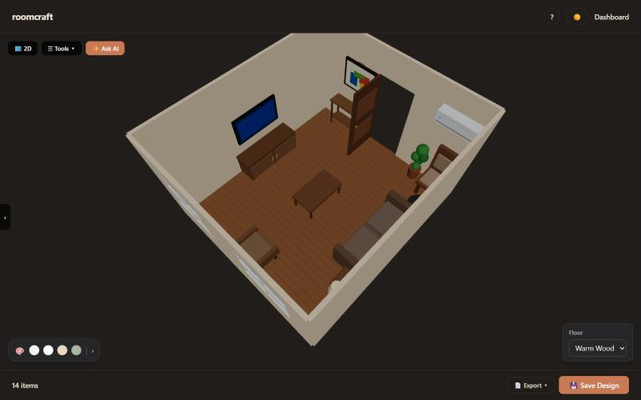
| Team members | [Team member 1, Roll no.] [Team member 2, Roll no.] [Team member 3, Roll no.] [Team member 4, Roll no.] |
| Guide | [Guide name, designation] |
| Department | [Department] |
| Institution | [College / University] |
| Academic year | [2026–27] |
| Date | November 2026 |
Planning a room usually means a tape measure, graph paper and a lot of guessing about whether the furniture will fit. roomcraft is a web application that removes those steps. A user can measure a real room with an Android phone's camera in the browser, open it as an editable floor plan and 3D model, and furnish it by hand or by asking an AI assistant in plain English. Every design is saved to the user's account and can be exported as a labelled PDF floor plan.
The system has four parts. A React + three.js frontend provides the dashboard, the 2D floor plan and the 3D room editor. An Express + PostgreSQL backend handles accounts (email OTP sign-up, JWT login), profiles and saved designs. A WebXR room scanner measures wall positions, ceiling height, doors, windows and furniture with the phone's AR tracking. An AI layer built on Google Gemini turns plain-English requests into furnished rooms and suggestions, while the app itself places every piece with deterministic collision rules, so the AI never produces overlapping or out-of-bounds furniture.
The scanner measured a ceiling at 2.72 m against a tape reading of 2.74 m, and straight lines on an open floor to within 1–2 cm. Its geometry is covered by 306 automated tests. The editor supports 14 room types, 86 furniture types, any furniture angle, connected rooms, and works on phones as well as laptops.
Anyone furnishing a room faces the same questions: how big is the room really, will this bed fit next to the wardrobe, does the door still open, and what will it look like? Professional design tools answer these but expect exact measurements and hours of learning. Simple room planners are easy to use but start from an empty box that the user has to measure and draw first, and they leave the design decisions to the user.
roomcraft covers residential and institutional rooms (14 types, from bedroom and kitchen to classroom and computer lab), rectangular rooms joined through doors into multi-room layouts, and a catalogue of 86 furniture types in four styles. The scanner runs on Android phones with ARCore in Chrome; iPhones are out of scope because Safari does not offer WebXR augmented reality.
Chapter 2 gives the architecture and chapter 3 the technologies. Chapters 4 to 8 describe each module in turn. Chapters 9 to 11 cover the data model, user interface and security, chapter 12 the testing and results, and chapters 13 and 14 the limitations, future work and conclusion.
roomcraft is a client–server web application. The browser runs two pages from the same frontend: the main React
app (index.html) and the AR room scanner (scan.html). Both talk only to the frontend's own
address; API calls under /api and uploaded files under /uploads are passed on to the
Express backend, which stores everything in PostgreSQL. Calls to Google Gemini are made from the server side, so
the API key never reaches the browser.
| Layer | Technology | Used for |
|---|---|---|
| Frontend framework | React 19, React Router, Vite 8 | Pages, routing, dev server with HTTPS for phones, production build |
| Styling | Tailwind CSS v4 | Light and dark themes from shared colour tokens, responsive layouts |
| 3D graphics | three.js, @react-three/fiber, drei | 3D room, furniture models, orbit camera, dragging pieces in 3D |
| 2D plan | SVG rendered by React | Scalable floor plan, labels, size lines; also reused for PDF export |
| jsPDF | A4 floor-plan export | |
| Backend | Node.js, Express | REST API, file uploads (multer), rate limiting |
| Database | PostgreSQL 16 (Docker locally) | Users, one-time codes, onboarding answers, designs (JSON columns) |
| Authentication | JWT, bcrypt, email OTP (Resend) | Sign-up verification, login, password reset |
| AR scanning | WebXR Device API (immersive-ar, hit-test, anchors, DOM overlay) | Measuring the room with the phone camera in Chrome |
| On-device vision | MediaPipe Tasks Vision (EfficientDet-Lite0) | Spotting furniture in the camera view during a scan |
| Generative AI | Google Gemini (flash-lite, flash) with JSON schemas | Chat suggestions, furnishing a room from a request, naming a piece from a photo |
| Testing and quality | Vitest, oxlint | 306 scanner tests; lint across the frontend |
Code size counts the frontend (about 11,700 lines), the backend (about 1,900) and the scanner (about 5,300), excluding tests and third-party libraries.
Registration asks for a name, email and password. The backend stores a bcrypt hash of the password and emails a 5-digit one-time code; the account becomes active only after the code is entered. Login returns a JSON Web Token that the frontend keeps in local storage and attaches to every request. A request that comes back as unauthorised returns the user to the login page. Forgotten passwords use the same code-by-email flow.
First-time users answer short onboarding questions. The profile page lets them change their name, profession and password and upload a profile photo, which is stored on the server and shown in a circle in the dashboard's top bar.
My Designs lists the saved designs as cards with the room type, size and last update. From here the user opens a design, starts a new one, exports a design's floor plan, deletes one, or starts a phone scan with Scan my room. On a phone the top bar shortens to icons and the action buttons sit side by side.
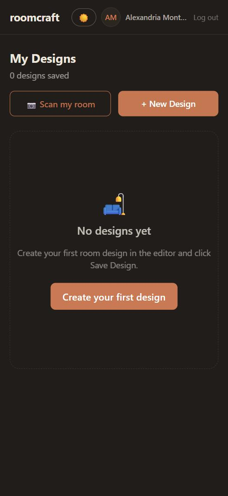
The editor is where a room is built and furnished. A room panel on the left sets the room type, width, length, height and style; Generate room fills it with a typical furniture set for that room type, placed by the app's rules. The same room can be viewed as a flat 2D plan or a 3D model, and every change in one shows in the other.
All placement goes through one set of rules (utils/layout.js), used by the editor, the room
generator, the AI placer and the scanner's tidy-up:
| Rule | What it does |
|---|---|
| Inside the room | Every piece's rotated footprint must stay inside the inner faces of the walls. |
| No overlap | Two pieces keep at least 0.05 ft apart (rotated rectangles are compared exactly). |
| Wall clearance | A piece against a wall sits 0.13 ft from the wall's centre line, flush with its inner face. |
| Door swing kept clear | Each door has a keep-out area the size of its swing; no floor piece may enter it. |
| Openings kept clear | Wall-mounted pieces (TV, painting, shelf) cannot cover a door or window, doors and windows cannot overlap each other, and a window AC must sit inside a window frame. |
| Free-spot search | When a new piece is added, the app searches along the walls and then the floor for the nearest legal spot. |
The plan is drawn as SVG, so it stays sharp at any zoom. Every piece is labelled inside its own box. Labels run along a piece's long side, use one or two lines, and slide or shrink so that no two labels touch, including when a wall item such as a cabinet hangs over a washing machine. Every room carries its width and length as size lines on a side with no neighbouring room. Zoom buttons, a fit-to-room button and pinch or scroll zoom are provided.
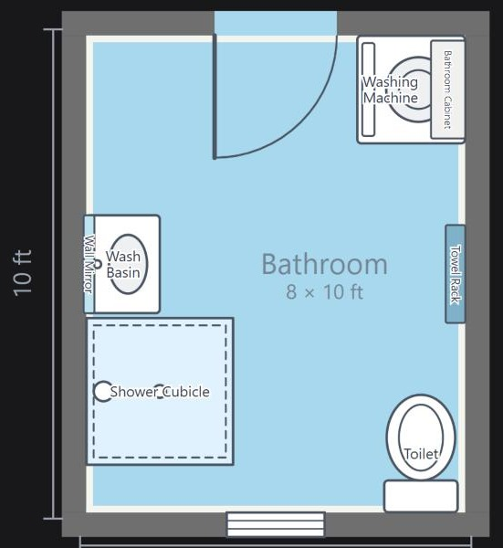
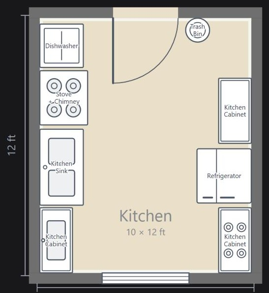
A + box outside each door adds a second room through that door. Rooms dock to each other wall to wall, can be dragged along the shared wall, turned in 90° steps, or the whole layout turned at once. The doorway between two rooms is drawn open on both sides, and each room keeps its own furniture, colours and floor.
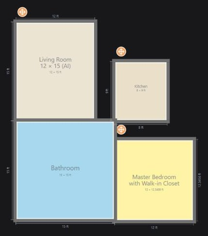
The scanner measures a real room with the phone's camera, in the browser, with no app to install. It uses the WebXR Device API in Chrome on Android (ARCore): the phone tracks its own position in the room, and a hit test returns the 3D point where the centre of the screen meets the floor or a wall.
A small diagram on screen shows the current wall and which corner is next, and a short hint at the start points to where progress is shown.
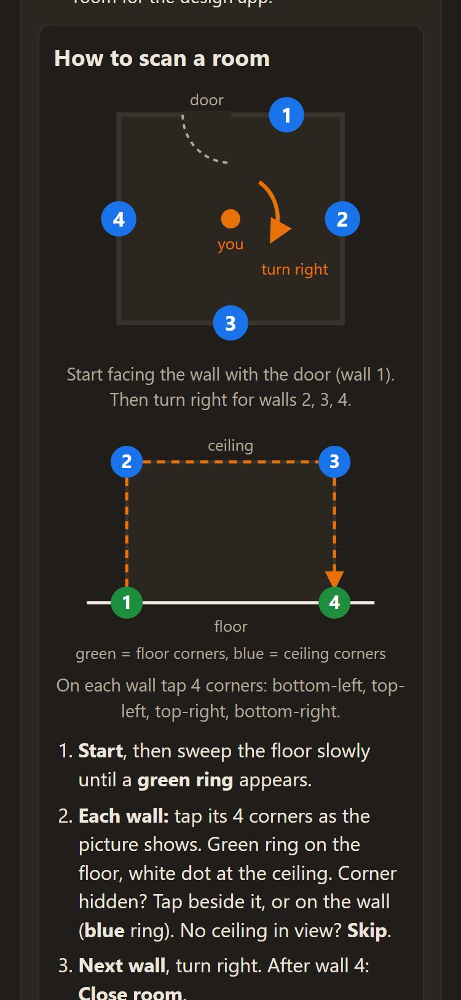
Every result is recomputed from the raw taps, which are saved in a scan log. An old scan therefore improves automatically when the geometry code improves, and a saved log can be reopened on a laptop with Open a scan file.
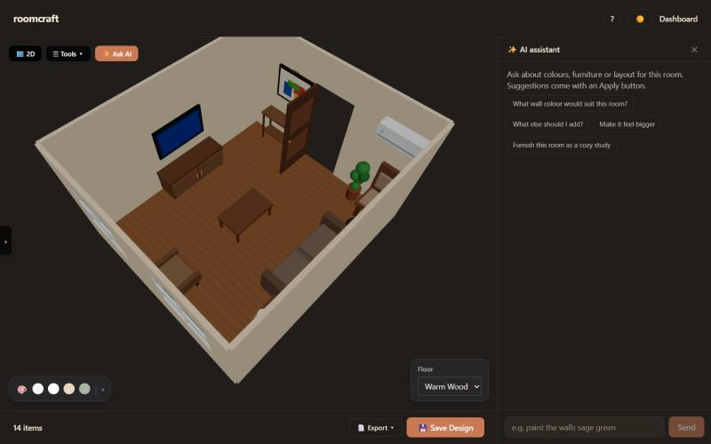
✨ Ask AI in the editor answers questions about the open room and proposes changes: paint walls, change the floor, add or remove a piece, or furnish the whole room ("furnish this as a cozy study"). Every concrete suggestion appears as a button. Nothing changes until the user taps it, and every applied change can be undone. "Furnish this room as…" keeps the room's size, doors and windows, so it works on a scanned room too: scan the room, then ask the assistant to furnish it.
| Technique | Effect |
|---|---|
| Catalogue sent with every request | The model can only choose furniture, styles, floors and paints that the app can draw. |
| Structured output (JSON schema) | Answers come back as typed actions (set_wall_color, add_furniture, furnish_room…), never free-form coordinates. |
| Server-side checking | Every id is checked against the catalogue again; paint names are repaired to valid colours; a reply that promises a change but carries no action is retried. |
| App does the placing | Pieces are placed by utils/promptRoom.js with the editor's rules, so AI-made rooms never overlap or block doors. |
| Time limits and fallback | 40 s per attempt, 75 s in total, with a faster model first and a fallback model if it is busy. |
| Rate limit | 12 assistant requests per minute per user. |
When adding furniture during a scan, the user can tap Guess from camera instead of picking the type. The phone first makes a quick guess on the device with MediaPipe's EfficientDet-Lite0 object detector (beds, chairs, sofas, tables, TVs and similar), then sends one camera frame to Gemini through the server, which answers with a furniture type from the app's catalogue. The best match is highlighted in the furniture picker; the user taps it to confirm or picks another type, so a wrong guess never lands in the room unnoticed.
Any design can be exported as an A4 PDF from the editor or the dashboard. The export draws the same React component as the on-screen 2D plan, off screen, then converts it to an image and places it on the page with the design's name, room type, size, number of items and date. The PDF therefore always matches what the user sees: every room with its size lines, every piece labelled inside its box, doors with their swings and windows. On a phone the PDF can be shared directly through the phone's share sheet.
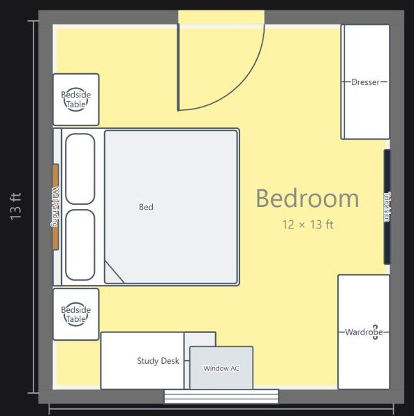
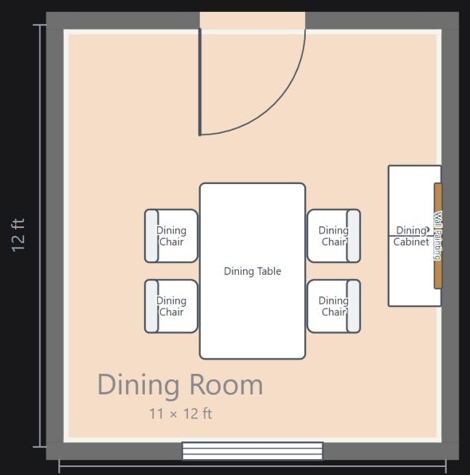
| Table | Contents |
|---|---|
users | Name, email, bcrypt password hash, profession, profile photo path, verified and onboarding flags. |
otps | One-time codes for sign-up and password reset; each has an expiry time and works only once. |
onboarding_responses | Answers to the first-time questions. |
designs | One row per design: name, room type, width, length and wall height in feet (4 decimals), style, floor, and JSON lists of furniture, doors and windows, wall colours and connected rooms. |
Storing furniture and openings as JSON keeps a whole design in one row, so opening or saving a design is a single query, and new furniture fields can be added without a database migration.
| Group | Routes | Purpose |
|---|---|---|
| Auth | 4 | Register, log in, forgot and reset password |
| OTP | 3 | Send, verify and resend one-time codes |
| Profile 🔒 | 4 | Read and update profile, change password, upload photo |
| Onboarding 🔒 | 1 | Save the first-time answers |
| Designs 🔒 | 5 | List, read, create, update, delete designs |
| Assistant 🔒 | 2 | Plan a room from text; chat about the open room |
🔒 needs a valid login token.
All lengths are in feet. The room is centred on the origin with the front wall at −z. A floor piece stores its
centre (x, z), size and rotation; a wall piece stores its wall, its position along that
wall and its height above the floor. Connected rooms store their offset from the main room.
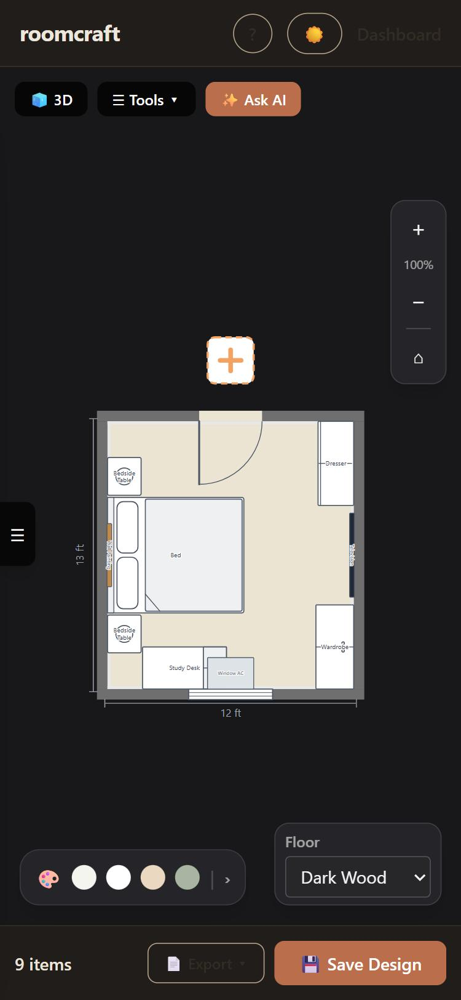
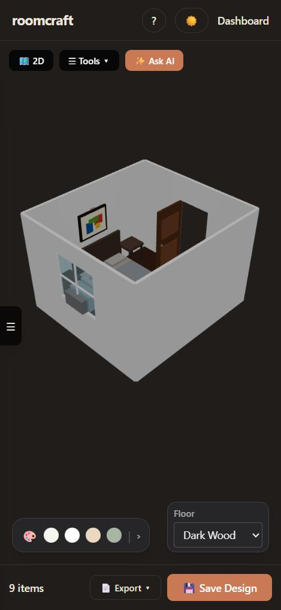
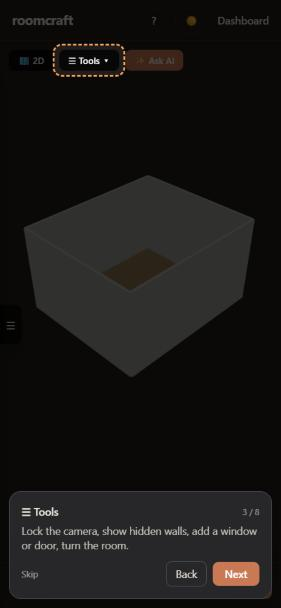
| Area | Measure |
|---|---|
| Passwords | Stored only as bcrypt hashes (cost 10). |
| Sessions | Signed JWTs with an expiry; every protected route checks the token. |
| Account verification | Email one-time codes that expire and work only once; checking them is rate-limited. |
| Brute force | Rate limits: 10 logins, 5 code requests and 10 code checks per 15 minutes; 10 photo uploads per hour; 12 AI requests per minute; 200 requests per 15 minutes overall. |
| Secrets | Database password, JWT secret and Gemini key live in server-side .env files, excluded from version control; the Gemini key is a free-tier key with no billing attached. |
| Data access | Every design query is filtered by the logged-in user's id, so users can only see and change their own designs. |
| Uploads | Profile photos are size-limited and type-checked. |
| Transport | HTTPS in development (needed by WebXR) and in production. |
The scanner's geometry is covered by 306 Vitest tests in 16 files, including a complete room scan driven by a simulated AR session. Every geometry test uses rooms that are rotated, away from the origin and with the floor below zero, as in a real AR session, so the code cannot rely on convenient coordinates.
| Measurement | Result |
|---|---|
| Straight lines on an open floor | Within 1–2 cm typically; about 4 cm on long lines |
| Ceiling height (real room) | 2.72 m against 2.74 m by tape |
| Room size | Within a few centimetres when tracking is steady and the corners are visible |
| Furniture size from one tap | Standard catalogue sizes (Single, Double, Queen, King…), not measured |
roomcraft shows that room planning can start from the real room rather than an empty box. A phone in a browser measures the room to within centimetres, the editor turns it into a 2D plan and 3D model that enforce physical rules, and an AI assistant proposes complete layouts and changes that the user applies with a tap. Keeping the AI to choosing items while the app does the placing gave reliable results: AI-made rooms follow the same collision and clearance rules as rooms built by hand.
The project combined web development, 3D graphics, augmented reality, computer vision and generative AI in one product that works on phones and laptops alike, with accounts, saved designs and printable floor plans.